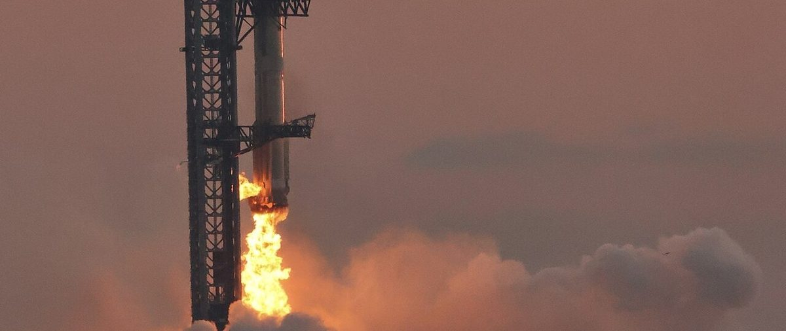

Ship 42 runs all six engines
A full-duration static fire for Flight 15, United's chief on Starlink, and a compute deal Anthropic put at up to $120.5 billion.
"Starship Flight 15: Ship 42 conducts a six-engine static fire test," NASASpaceflight posted at 5:46 p.m. EDT Tuesday, adding a minute later: "Full duration" (post). The ship had run a single-engine static fire on Monday. It ran its six engines for roughly 60 seconds on the static fire stand at SpaceX's Massey Outpost, according to Next Spaceflight. Ship 43 and Booster 23 are slated for Flight 16, the first Starship launch from LC-39A in Florida, NASASpaceflight posted early Wednesday.

United's "biggest competitive advantage"
United Airlines is adding Starlink to about three aircraft a day and already has it on 661 jets, chief executive Scott Kirby said on the Cheeky Pint podcast released Tuesday, TeslaNorth reported; full-fleet coverage is due by the end of 2027. "I think it's the biggest competitive advantage. And it's temporary," Kirby said, Teslarati reported. "Everybody eventually is going to have high speed low earth orbit internet connectivity."
Anthropic's compute bill
Anthropic could pay SpaceX up to $120.5 billion for compute through 2029, the AI lab disclosed in its S-1 filing on Monday, Yahoo Finance reported. Monthly payments would rise to about $3.1 billion once all contracted capacity is delivered, which Anthropic expects in December 2026; the figure is a maximum, and either side can terminate on 90 days' notice after initial periods that end in January and March 2027.
The FCC votes Thursday
At its open meeting at 10:30 a.m. EDT Thursday, the Federal Communications Commission will consider making an additional 482 megahertz of spectrum available for Supplemental Coverage from Space, the satellite-to-phone service, according to the FCC agenda. AT&T, Verizon and T-Mobile have asked the FCC to drop two of the proposed bands, Capacity reported.
Report: ad bidder targeted Starlink users
Researchers at TrendAI, a unit of Trend Micro, concluded that Israeli ad-tech company Discover-Tech was the No. 1 bidder on Starlink traffic in more than 100 countries, likely to geolocate or otherwise surveil users, Reuters reported Tuesday, citing six people familiar with the matter. TrendAI assessed the activity as "targeting and tracking infrastructure rather than a commercial advertising operation." SpaceX and Discover-Tech did not respond to requests for comment (Reuters).